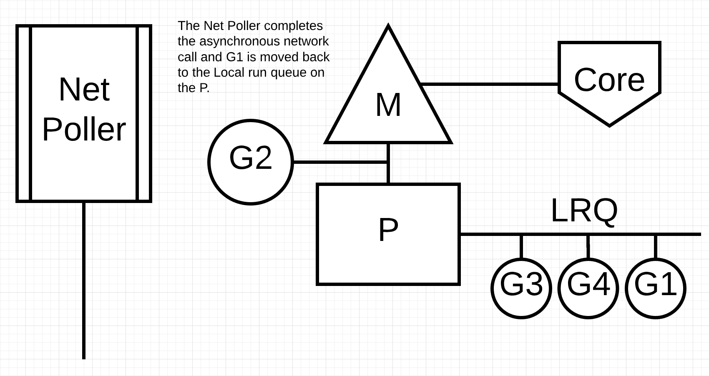
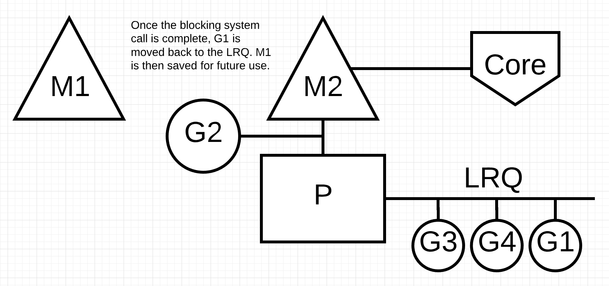
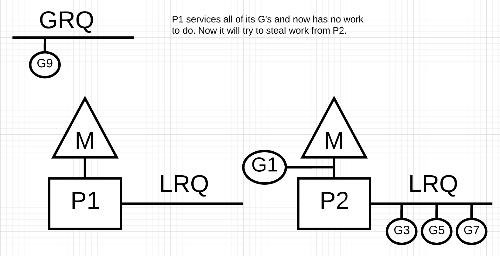

Go scheduler
О чем говорим
- процессор
- многозадачность и многопоточность
- OS scheduler и прерывания
- проблемы многопоточности
- thread pool
- асинхронность и event loop
- io bound и cpu bound
- системные вызовы
- Go scheduler
- проблемы Go scheduler-a?!


OS scheduler
CFS scheduler
code
Прерывания (interrupts)
События:
Исключения:
Прерывания (interrupts)
События:
- нажатие кнопки
- тик часов
- взаимодействие с сетью
- ...
Исключения:
Прерывания (interrupts)
События:
- нажатие кнопки
- тик часов
- взаимодействие с сетью
- ...
Исключения:
- деление на 0
- нарушения памяти (page fault)
- двойное исключение (double fault)
- ...
Thread states


io bound
cpu bound
SECTION .data
msg db "Hello, world!", 0
len equ $ - msg
SECTION .text
global _start
_start:
mov rax, 1
mov rdi, 1
mov rsi, msg
mov rdx, len
syscall
mov rax, 0x3c
mov rdi, 0
syscall
go scheduler

context switching
- использование ключевого слова go
- сборка мусора
- системные вызовы
- синхронизация
async (non-blocking) system call

async system call

async system call
sync (blocking) system call

sync system call

sync system call
work stealing

work stealing
work stealing

work stealing

work stealing

func main() {
runtime.GOMAXPROCS(1)
go func() {
var u int
for {
u -= 2
if u == 1 { break }
}
}()
<- time.After(time.Millisecond * 5)
fmt.Println("go 1.13 has never been here")
}